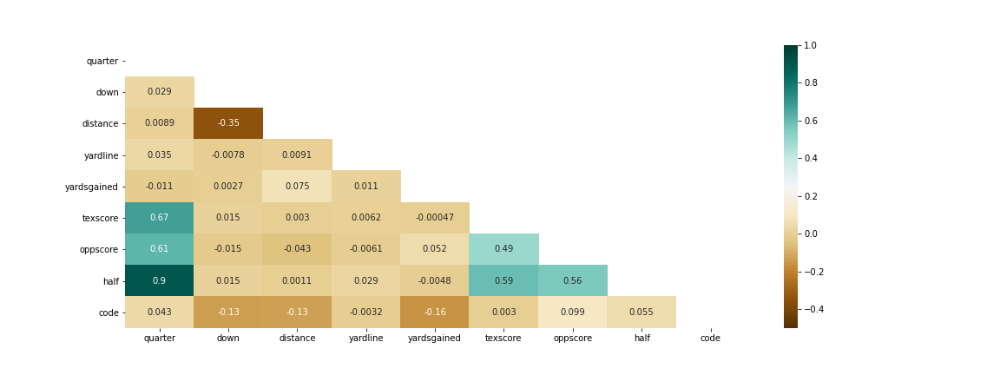

Calling the right play is key to winning, and the defense play caller below is here to give you the victory!
In football, offense makes most headlines; defense sets this up through dominating opposing offense and delivering good field position,
thus allowing an easier time scoring. Simply, offense may win games, but DEFENSE wins championships! Hook 'Em!
If you want to know more about our logic and machine learning process, check out our
Methodology
and read our
Findings
sections.
You need to call a:
{{ call }}
Take a look at the chart below to learn how different variables positively or negatively affect the probability of plays.
As a football fan may expect, down and distance have the most impact while others, not so much.

Look at the
findings
page to see how these correlate to the prediction.